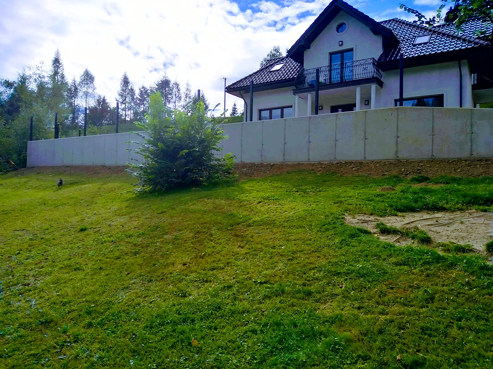
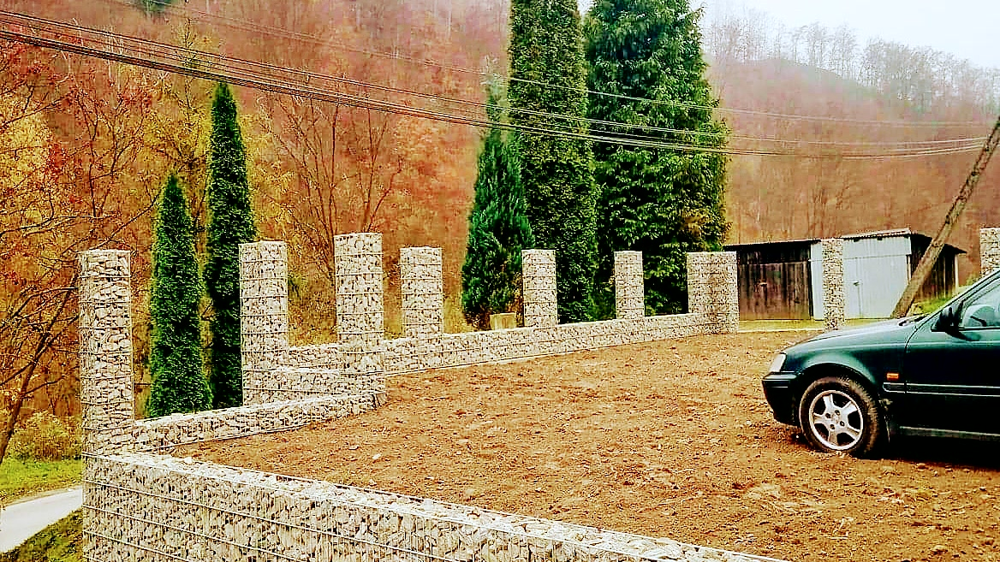
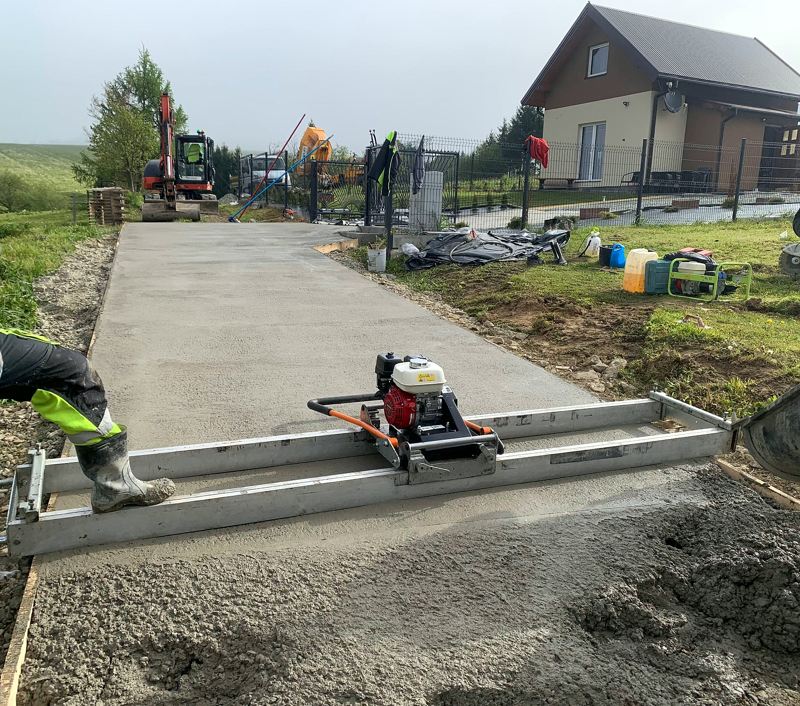
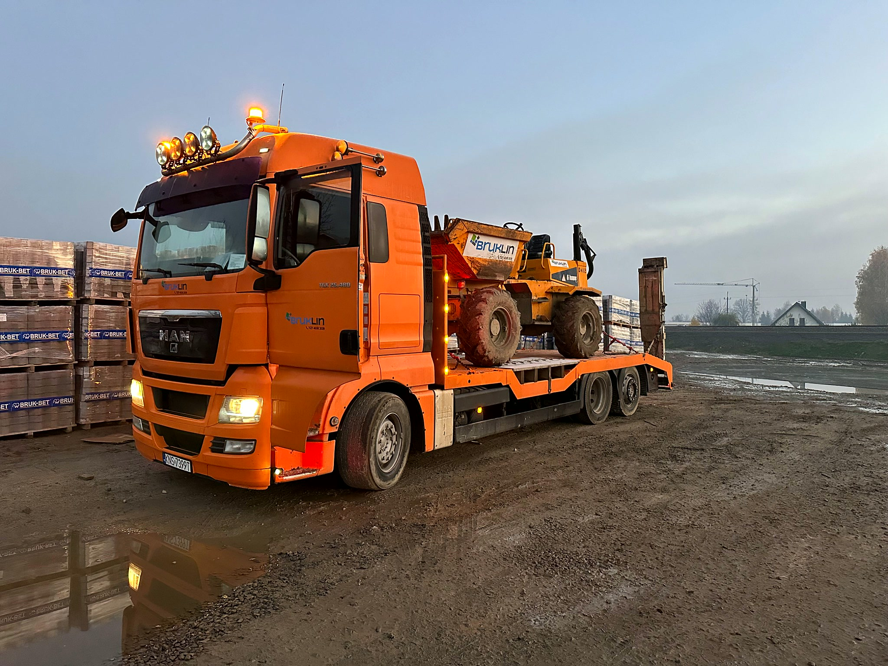

Poznaj naszą ekipę
Lokalna firma spod Piwnicznej-Zdroju. Kostka, beton, mury oporowe i prace ziemne - z własnym sprzętem i jedną ekipą od wykopu do odbioru.

Jak pracujemy
W Piwnicznej-Zdroju łatwo nas sprawdzić - nasze podjazdy i tarasy leżą przy okolicznych ulicach. Przed decyzją możemy podać adresy kilku robót: przejedź się i zobacz, jak wyglądają po paru zimach.
To lepszy dowód niż zdjęcia z dnia odbioru.
Firmę prowadzi Dariusz Grucela. Klienci piszą w opiniach, że brukarstwo to dla niego nie tylko sposób na życie, ale pasja, a ekipa ma fach w rękach. Z takim nastawieniem podchodzimy do każdego podjazdu, małego i dużego. W Google mamy ocenę 5,0 z 10 opinii.

Nie tylko kostka
Układamy kostkę betonową i granitową, od ścieżki przy domu po duży parking. Robimy też drogi i podjazdy z betonu, posadzki, zbrojenie i szalowanie, mury oporowe oraz kosze z kamienia, czyli gabiony.
W górach dochodzi woda: melioracja, odmulanie potoków, narzuty z kamienia i usuwanie skutków powodzi. Do tego prace ziemne, utwardzanie terenu i ogrodzenia.

Własny sprzęt
Koparki, wywrotki, systemowe szalunki i zagęszczarki mamy na miejscu. Dzięki temu termin zależy od nas, a nie od wypożyczalni.
Pracujemy na terenie Małopolski, najczęściej w Piwnicznej-Zdroju i okolicy.
Masz robotę do zrobienia? Zapytaj o wycenę
Bez zobowiązań - opowiedz, co trzeba zrobić, a my podpowiemy jak i wycenimy.